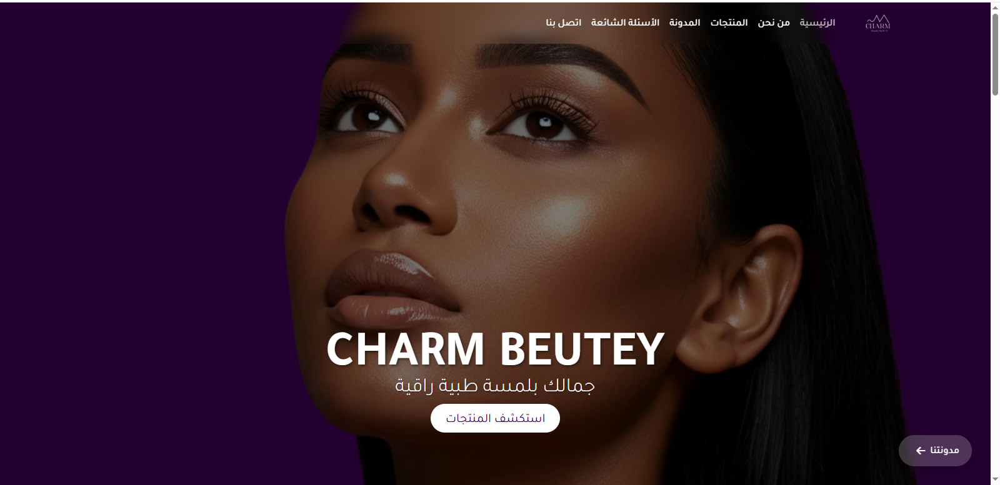
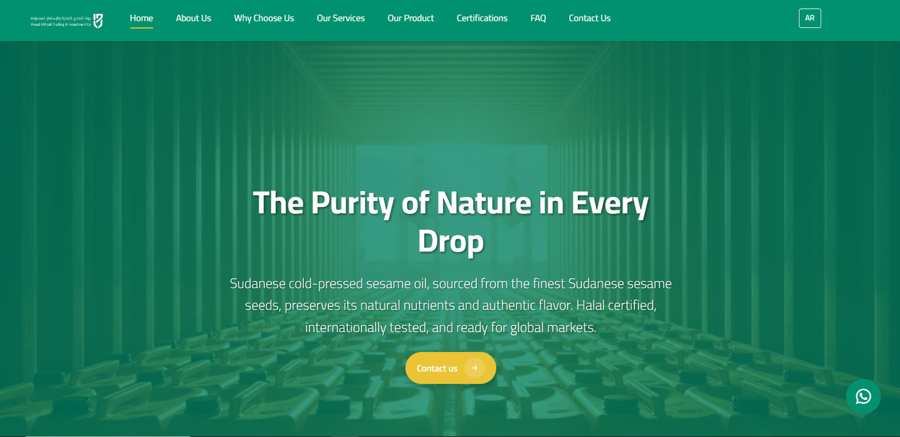
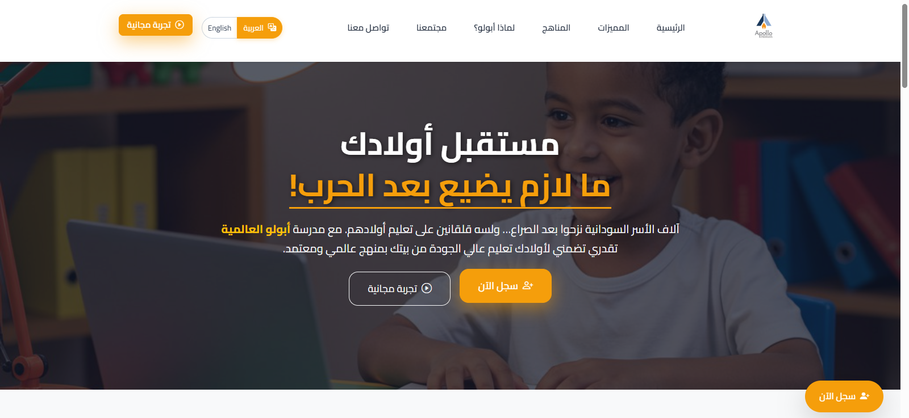
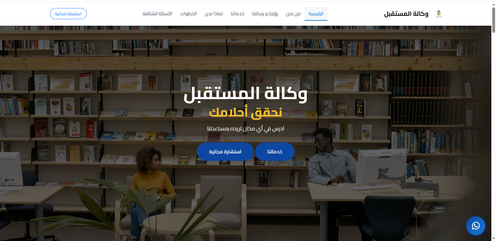

حول مشروعك من مجرد 'حساب سوشيال'
إلى كيان رقمي مستقل.
أبني لك واجهة تفرض هيبتك، تضمن ولاء عملائك، وتعمل لصالحك 24/7.
// تكلفة الفرصة البديلة
الاعتماد الحصري على السوشيال ميديا يجعلك مجرد "حساب مؤقت" في نظر العميل. بينما الموقع الرسمي يبني لك هيبة تجارية دائمة، ويجعل مشروعك مرئياً للباحثين عنك خارج حدود المنصات المتقلبة.
العملاء الكبار يبحثون عن الأمان والثقل القانوني. غياب الموقع يرسل رسالة فورية بأن مشروعك "مؤقت"، مما يدفع الزبون عالي القيمة للهروب نحو منافسيك
أنت لا تملك متابعيك؛ أي تحديث في القوانين أو إغلاق عشوائي للحساب قد ينهي عملك في ثوانٍ. الموقع هو الأرض الوحيدة التي تمتلك صك ملكيتها بالكامل.
تشتت الطلبات بين رسائل الصفحة والواتساب يستنزف وقتك ويؤدي لضياع العملاء الجادين. الموقع ينظم، يستقبل، ويفلتر العملاء بدلاً عنك على مدار الساعة وبشكل آلي.
آلاف من أصحاب القرار يتصفحون محركات البحث يومياً للوصول لحلول جادة. إذا لم يكن لديك موقع، فأنت خارج حساباتهم تماماً، وموجود فقط في الزوايا المنسية للسوشيال ميديا.
// فلسفة التحول الرقمي
لا أقدم مجرد "صفحات"، بل أؤسس صرحاً رقمياً آمناً يعرض خدماتك بأسلوب يُجبر العميل على الثقة بك فور دخوله، ويحول المتصفح المتردد إلى زبون يتواصل معك بجدية.
امتلاك صك ملكية موقع مستقل تماماً، محمي بأكواد نظيفة وخاصة ببراندك، بعيداً عن تقلبات الخوارزميات ومخاطر حظر حسابات التواصل الاجتماعي.
موقع تعريفي يعكس احترافية مشروعك بأسلوب يضاهي الماركات العالمية، لتبني ثقة ومصداقية فورية أمام عملائك وشركائك في أي سوق.
نظام ذكي يستقبل العملاء، يوضح حلولك لمشاكلهم، ويقودهم في خط مستقيم لحجز استشارتهم معك تلقائياً، لتتخلص نهائياً من عشوائية الرسائل اليدوية.
// نماذج الأعمال
موقع إلكتروني تسويقي متخصص في منتجات العناية بالبشرة والجمال، وبيظهر بصورة احترافية لتقديم مجموعة من حلول العناية بالبشرة، مع تركيز خاص على علاج علامات التمدد ومنتجات الترطيب وغيرها من منتجات العناية الشخصية

واجهة مخصصة صُممت لتكون جسراً رقمياً يربط جودة الإنتاج السوداني بالمستورد الدولي ركزتُ في الهندسة على إبراز معايير الجودة والاحترافية المؤسسية في كل تفصيلة، لتمكين البراند من فرض حضوره القوي في الأسواق العالمية

صفحة Apollo School هي صفحة هبوط تعليمية تقدم معلومات شاملة عن المدرسة ومناهجها التعليمية مع تسليط الضوء على المميزات والخدمات التي توفرها للطلاب. مع أقسام توضّح المناهج، مميزات المدرسة، ونموذج تسجيل الطلاب لتسهيل تفاعل الزوار وتشجيع التسجيل بسهولة

صممت واجهة حولت الخدمات الاستشارية والسفر من إجراءات معقدة ومشتتة إلى رحلة رقمية واضحة وموثوقة، مما ضاعف ثقة الطلاب ورفع معدل طلبات الاستشارة المقدمة للوكالة

غياب موقع رسمي لمشروعك يعني بقاء أرباحك تحت رحمة خوارزميات السوشيال ميديا وتشتت الطلبات يدوياً. اضغط الآن لتأمين كيان مستقل وبدء استقبال طلباتك بشكل آلي ومنظم.
شكراً لثقتك واهتمامك بالتحول الرقمي. سأتواصل معك شخصياً عبر بريدك أو هاتف الواتساب الذي أدرجته خلال ساعات قليلة، لنرسم معاً معمارية موقعك المستقل.
// لنبدأ
لا نضيع الوقت في مكالمات بيعية مكررة. سأراجع معك شخصياً فكرة مشروعك، ونضع معاً الخطة لواجهةٍ تقتنص عملائك الجادين وتدير طلباتك بشكل آلي ومنظم منذ اللحظة الأولى
✓ تواصل مباشر معي لضمان خصوصية وجودة مشروعك
✓ خطة واضحة للتحول الرقمي الكامل.